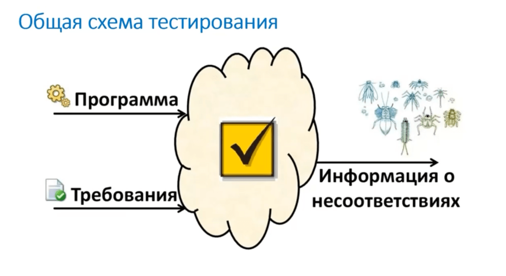
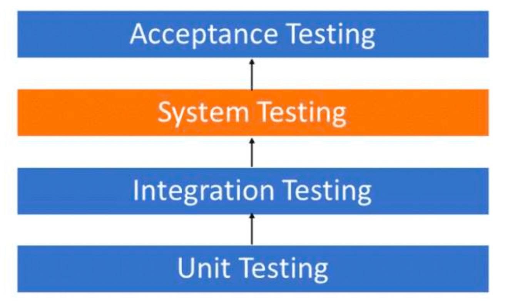
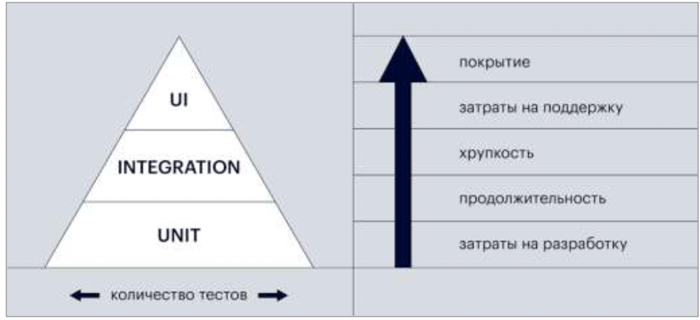
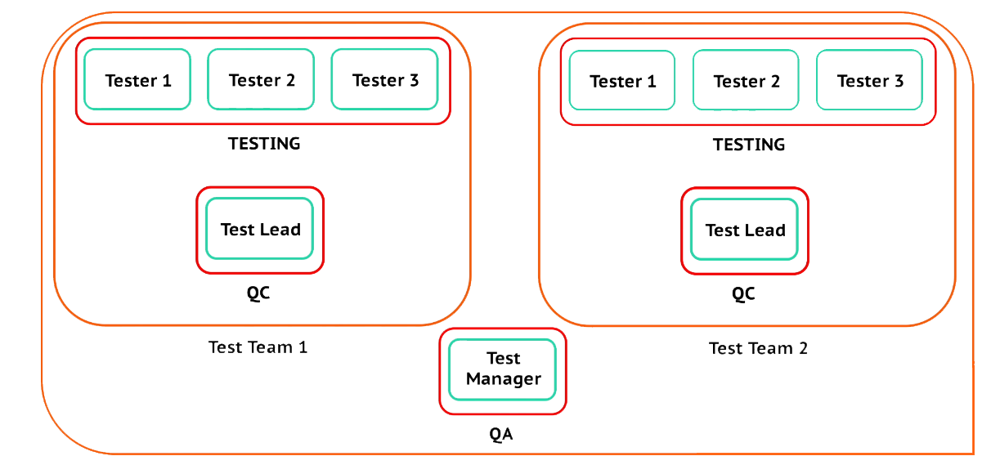

Основные понятия
Тестирование (Testing)

Каждый предмет имеет как физ. так и тех. свойства, и мы от него что-то ожидаем.
-
Процесс исследования ПО, имеющий 2 основные цели:
- Выявить ситуации, при которых поведение ПО является н�еправильным
- Проверить, что ПО полностью соответствует требованиям заказчика.
-
Процесс иследования программы и её документации, чтобы ожидаемое поведение программы было правильным.
-
Собственно тестирование, работа тестировщика по выполнению, тестов, описанных в тестовой документации и локализайция деффектов. Работа тестировщиков (Tester). Поиск и описание багов, передача их на устранение.
Тестирование ПО - очень важный процесс, потому что ошибки ПО могуг дорого стоить и быть очень опасными (запуск косм. аппаратов, ПО в самолётах и т.д.). Необходимо для выпуска качественного продукта.
Принципы тестирования
- Тестирование демонстрирует наличие деффектов
- Исчерпывающее тестирование недостижимо
- Раннее тестирование (тестирование в процессе разработки). Нужно обнаруживать баги еще до релиза.
- Скопление деффектов (принцип Парето 20/80) - "20% усилий дают 80% результата, а остальные 80% усилий — лишь 20% результата»"*. Бóльшая часть багов находится в небольшом объёме ПО.
- Парадокс пестицида (Паразиты привыкают к пестицидам, нужно периодически менять состав пестицида), в тестирование тестировании тестовый сценарий нужно также постоянно обновлять/пересматривать/актуализировать.
- Тестирование зависит от контекста. Не всегда можно применять общий шаблон для тестирования разного ПО.
- Заблуждение об отсутствии ошибок (какие-то баги есть всегда).
Классификация тестирования
1. По виду функциональности работы приложения (должно указываться в ТЗ)
-
Функциональное (по работе приложения, должно отвечать на вопрос: "Что?")
- Бизнес-требования
- Требования пользователей
- Функциональные требования
-
Нефункциональное (по дополнительным параметрам, должно отвечать на вопрос: "Как?")
- Требования и документация (ТЗ)
- Не должно быть двухсмысленности (конкретика)
- Требования должны быть к ПО, а не к пользователю
- Производительность
- Нагрузочное (DDos), Stress-testing
- Утечка памяти
- Отказоустойчивость и восстанавливаемость
- Отказ и восстановление (Варианты отказа, как восстановить данные)
- Тестирование БД
- Совместимость
- Кроссплатфоренное (Работа на всех платформах)
- UI
- UI-элементы (чтобы все работало, ПО Sellenium)
- Юзабилити (как удобно пользоваться)
- GUI (графический интерфейс)
- CUI (консольный интерфейс)
- Безопасность (Безопасность данных, проникновение)
- Вредоносные скрипты, введенные в формы (проверка вводных данных), должна быть валидация
- HTTPS
- cookies and tokens (JWT, Cookie-Based Authentication, Token-Based Authentication)
- Шифрование данных
- DDos атаки, SQL-инъекции и пр.
- Локализация
- Язык
- Формат времени
- Валюта
- Ед. измерения и др.
- Интернационализация (особенности страны, цвета, обычаи, направление текста)
- Установочное (Инсталляционное)
- Только для мобильных и десктопных приложений (в вебе нет)
- Установка, удаление (полное/частичное), обновления, хранение данных
- Требования и документация (ТЗ)
2 - По внедрению нового функционала
- Прогрессионное (проверка нового функционала)
- Регрессионное (перепровека старого функционала, после внедрения нового)
3 - По степени важности тестируемых функций
- Дымовое (smoke-testing, проверка только свмого важного и основного функционала, без которого приложение бесполезно, критические функции), "Не пошол ли дым с установки?" Smoke обычно делают после билда. Результат либо да или нет. Если нет, то дальнейшее тестирование не проводится, нужно устранять критические ошибки.
- Критического пути (более глубокое/детальное тестирование по наиболее распространенным схемам/сценариям пользования клиентом)
- Расширенное тестирование (самое глубокое тестирование, вся функциона�льность, описанная в требованиях)
- Sanity testing (санитарное) - Как smoke, только более глубокое. Если smoke делается при каждом билде, чтобы убедиться что билд стабильный, то Sanity делается уже на стабильном билде, чтобы убедиться что все критические функции работают. Проверка какой-либо наиболее проблемной части кода, где ранее были замечены ошибки или могут появиться новые.
- Retest (retest) - повторное тестирование
Первично должно быть cмок-тестирование, а уже потом критический путь. Как бы смок-тесты нам дают апрув для того, чтобы уже выполнять последующее тестирование критического пути. И по идее, нельзя делать тестирование критического пути, если еще не было положительного результата от смок-тестирования.
По глубине тестирования можно выстроить такую иерархию: Смок-тестирование —> Критический путь —> Расширенное тестирование
В каждой последующей стадии тестирование функционала более глубокое.
Пример
Смок-тестирование - это тестирование, когда мы проверяем весь базовый функционал (на примере автомобиля: работает двигатель, тормоза, включаются фары, коробка передач и т.д) А тестирование критического пути - это уже более глубокая проверка по частым сценариям/схемам использования (на примере автомобиля: поездка на этом автомобиле из точки А в точку Б).
То есть, первично должно быть Смок-тестирование, а уже потом критический путь. Как бы смок-тесты нам дают апрув для того, чтобы уже выполнять последующее тестирование критического пути. И по идее, нельзя делать тестирование критического пути, если еще не было положительного результата от смок-тестирования.
4 - По позитивности сценария
- Позитивное (проверка системы с работой с ожидаемыми типами данных, по тем данным, которые и должны быть)
- Негативное (что будет если?) (проверка системы с работой �с неожидаемыми типами данных, например если в цифровое поле будет введен еще текст, как система будет себя вести). Чаще всего баги кроются в негативных сценариях.
5 - По доступу к коду
Насколько можно быть погруженным в техническую часть проекта.
- Черный ящик (без доступа к коду, с позиции пользователя, можно тестировать все что угодно)
- Белый ящик (с доступом к исходному коду, к БД) unit-тесты, проверяется самими разработчиками
- Серый ящик (микс, если тестировщик имеет опыт программирования, совместно с разработчиком)
6 - По запуску кода
- Статическое - без запуска кода (документация, дизайн, прототипы, код не нужен вообще, цель - найти ошибки до разработк�и кода, устранить потенциальные риски)
- Динамическое - с запуском кода (функциональное), проверка реального поведения ПО.
7 - По степени автоматизации
- Ручное (вручную, мануальное, тестирует человек, юзабилити)
- Автоматизированное (авто-тесты, тестируется скриптами, программами, цель - максимально сократить число мануальных тест-кейсов)
- Скорость выполнения тест-кейсов может быть на порядок выше, чем у мануального тестирования. Большое тестовое покрытие.
- Большой объем данных и отчет
- Автоматизация (проект внутри проекта), высокие затраты
- Требует навыков программирования
- Требует актуализации тест-кейсов (Парадокс пестицида)
- Мутационное - вид автоматизированного тестирования, при котором в исходный код добавляются "мутации", какие-то случайные изменения, а потом код прогоняется тестами. Своего рода, проверка для авто-тестов. Если мутация остается незамеченной авто-тестами, хначит авто-тесты неэффективны.
8 - По уровню детализации
- Модульное (компонентное, также unit-тесты для разработчиков, тестируется только отдельный модуль в изоляции от всего другого)
- New Feature Test - проверка только нового функционала. (часть модульного)
- Retest - повторный тест после возвращения задачи на доработку (перепроверка)
- Интеграционное (проверка взаимодействия отдельного модуля с остальными, тестирование подходом "Большого взрыва")
- Системное (полностью, вся система)
- Приёмочное (UAT, бета-тестинг, реальные клиенты, сторона заказчика).
Состоит из:
- Альфа-тестирование – проверка программного продукта на поздней стадии разработки. Проводится самими разработчиками и тестировщиками.
- Бета-тестирование – оценка ПО перед выходом на рынок в фокус-группе или добровольцами. Отзывы собираются, анализируются и учитываются при внесении правок. Фидбек от пользователей.
- Гамма-тестирование – финальное тестирование, после устранения замечаний в бета-тестировании.
- Release Candidate (RC) – сборка, претендующая к релизу

Юнит-тесты (разработчики) -> Интеграционное тестирование --> Системное тестирование --> Приёмочное тестирование (Чтобы фичу считать законченной)

По важности и кол-ву тестов: Юнит-тесты (разработчики) -> Интеграционное тестирование (функционал - бóльший приоритет) --> UI (меньший приоритет)
9 - По командной работе
- Парное - два тестировщика или тестировщик + разработчик (могут быть разные комбинации) тестируют одно и то же.
- Параллельное - два тестировщика тестируют один и тото же модуль, но разные версии ПО (для поиска несоответствий)
- A / B-тестирование - исследование на ранних стадиях, часто используется в дизайне. Допустим, есть версия дизайна А и версия дизайна B и необходимо понять какая версия лучше. Варианты показываются различным группам (фокус-группы, различные категории пользователей).
- Gorilla/Monkey - хаотичное тестирования, что-то наподобие негативного тестирования, нестандартные сценарии (обезьяну подпустили). Нужно протестировать какой-ниб сложный модуль и целая команда может его проверять (и тестировщики и разработчики).
- Ad-hoc (случайное, хаотичное) - быстрое интуитивное свободное исследование. Формальное, ипровизиционное, не нужна документация. Если нужно побыстрому проверить систему и дать предварительную оценку.
10 - По степени формализации (сценарное)
-
Есть сценарий. По тест-кейсам, описанным в ТЗ.
-
Нет сценария
- Исследовательское тестирования
Нет документации с тестовым сценарием. Тестировщики проверяют систему "на лету", по своему опыту. Свобода и ответственность.
При таком виде тестирования нужно:
- классифицировать все ошибки, проблемы и неисправности, раставить приоритеты
- вести документацию, описать тест-кейсы
- Свободное тестирование
- Adhoc
- Gorilla/Monkey
- Свободное тестирование
Тоже без документации, только еще более свободное без структурирования, плана и т.д. У тестировщика полностью развязаны руки,
- Тестировать одни и те же модули могут разные тестировщики.
- Нужно документировать все ошибки.
Ошибка, деффект (bugs, failure)
Ожидаемым ≠ Реальному результату
- Несоответсвие требованиям
- Сбой программы, зависание, ошибки дизайна, неточности и пр.
Debuging - процесс, исправления ошибок. Bug-report - отчет об ошибках.
- Минорные
- Мажорные
- Критические
Жизненный цикл бага
Открытие --> Категоризация --> Исправление --> Проверка --> Закрытие --> Отчет
Верификация (проверка пройдена?) - процесс подтверждения на соответствие указаннымм требованиям. Прошел верификацию - система определила, что вы, это вы. Двухэтапная верификация (двойная проверка). Подтверждение того, что ТЗ было выполнено верно и в полном объеме.
Валидация (данные верны?) - доказательство того, что требования конкретного пользователя, п�родукта, услуги или системы удовлетворены. Итоговый продукт функционирует так, как от него ожидалось (более показательно).
Качество (Quality)
Степень соответствия ПО заявленным требованиям заказчика/пользователя. Качественный продукт - продукт, который соответствует требованиям заказчика/пользователя.
Quality Control (QC)
Контроль качества. Это часть QA. QC больше про проверку, что продукт удовлетворяет особому набору требований. Процесс, направленный на контроль текущего качества продукта и сравнение его с задуманными характеристиками. Работа Test Lead.
Quality Assurance (QA)
Обеспечение качества (не просто тестирование, более широкий смысл). Пла�нирование, проверка, автоматизация, создание и выполнение тест-кейсов, способность пользователю легче решать свои поставленные задачи, глубокая интеграция с процессом разработки, участие в разработке продукта. Делать все возможное, чтобы компания предоставляла лучший продукт или услугу. Это больше про качество построения процессов для лучшего качества продукта. Работа QA-специалиста (их крайне мало, работают в основном в крупных компаниях). Внедряется во все этапы разработки.

Quality Managment System (QMS)
Управление качеством. Близкое к QA, но в более глобальное в понимании. Руководители проекта, топ-менеджеры.
QMS -> QA -> QC -> Testing.
STLC (Software Testing Lifecycle)
- Анализ требований
- Создание тестовой документации (документирование артефактов. Чеклисты, тест-кейсы и пр.)
- Настройка тестовой среды
- Собственно тестирование
- Репорт